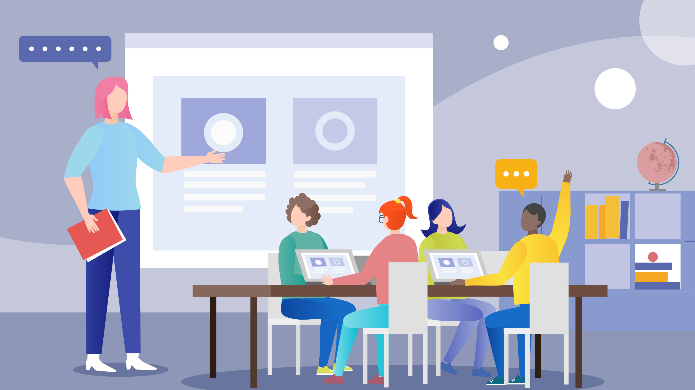

Modern Day Technologies |
|---|
|
Technology, as we all know is a man-made creation with the help of scientific and logical knowledge which is used by almost everyone and everywhere. Technology can be dated back to the 'stone age' where the early humans made basic tools out of stones and wood (trees) which were used for maybe hunting and other things for that they did for living. Modern technology as it is referred to in today's time was invented in the 18th century from where human life started to become more advanced and developed.
With the devleopment of technology, it has been applicable in various fields. One of the fields that have started adopting technological approach is schools and colleges. While the modern countries have completely started technological approach to studies adn teaching, here in nepal it has been gradually increasing. However, technology in terms of teaching and studying might sound fascinating but not all students can afford it while some hardly manage to get the sophisticated technology for studies. Well using technology for studies has both its pros and cons which will be discussed later. Technology helps a student to develop as he or she can gain knowledge through the internet. Various information can be derived adn researches conducted with the use of internet. However, the fact that students might overly misuse technology is also at hand. Most students might not do it but there is always a possibility. Not only this technological products are also expensive for a student. Though parents will purchase it for the sake of their children hoping that they will study, however it is expensive and if a student was to purchase it on their own, they would not be able to afford it as the society we have been brought up in has not taught us how to be self-sufficient and self-reliant at a young age, so we rely on our parents. However, this society has been changing slowly. In terms of technology as a whole, it has helped man kind progress effetively and achieve great results. Technology as of today has been used everywhere and in everything that humans do. From basic tasks to the most complex task, technology is applied. With respect to the life of a student, technology is used when he/she travels to their college, at college the use of projectors, laptops serves as technology, the coffee they drink from the cafeteria is made with the use of technology. Therefore, technology plays a significant role in the life of not only a student but of everyone, from toddlers to older citizens. |
Benefits of Technology |
Drawbacks of Technology |
|---|---|
|
|
|
Conclusion |
|---|
|
Technology as viewed with respect to the life of students seem helpful however it comes with a price, that are its disadvantages. While some of the disadvantages may or can be controlled and avoided, not all the cons of technology can be escaped.
|
|

|
|---|
The above two picture which can be viwed by clicking on the 'change image' button shows the two sides of technology. The first picture shows how in a class technology is being used where the studentes are using laptops to study and the teacehr is teaching with the help of some powerpoint.
On the other hand, the second picture shows how a kid is stuck to the laptop and no matter how much his mom tries to get him away from the laptop the kid would not budge.
Thus, no matter what technology it is, it usually has two sides, the pros and cons will always remain.